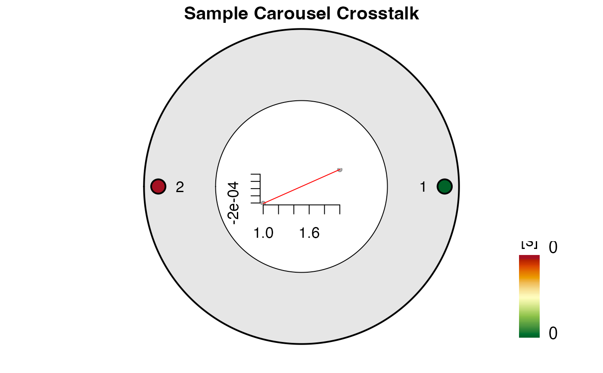

The function provides the analysis of cross-talk measurements on a FI lexsyg SMART reader using Al2O3:C chips
analyse_Al2O3C_CrossTalk( object, signal_integral = NULL, dose_points = c(0, 4), recordType = c("OSL (UVVIS)"), irradiation_time_correction = NULL, method_control = NULL, plot = TRUE, ... )
| object | RLum.Analysis (required): measurement input |
|---|---|
| signal_integral | numeric (optional): signal integral, used for the signal and the background. If nothing is provided the full range is used |
| dose_points | numeric (with default): vector with dose points, if dose points are repeated, only the general pattern needs to be provided. Default values follow the suggestions made by Kreutzer et al., 2018 |
| recordType | character (with default): input curve selection, which is passed to
function get_RLum. To deactivate the automatic selection set the argument to |
| irradiation_time_correction | numeric or RLum.Results (optional): information on the used irradiation time correction obtained by another experiments. |
| method_control | list (optional): optional parameters to control the calculation. See details for further explanations |
| plot | logical (with default): enable/disable plot output |
| ... | further arguments that can be passed to the plot output |
Function returns results numerically and graphically:
-----------------------------------
[ NUMERICAL OUTPUT ]
-----------------------------------
RLum.Results-object
slot: @data
| Element | Type | Description |
$data | data.frame | summed apparent dose table |
$data_full | data.frame | full apparent dose table |
$fit | lm | the linear model obtained from fitting |
$col.seq | numeric | the used colour vector |
slot: @info
The original function call
------------------------
[ PLOT OUTPUT ]
------------------------
An overview of the obtained apparent dose values
0.1.2
Kreutzer, S., 2021. analyse_Al2O3C_CrossTalk(): Al2O3:C Reader Cross Talk Analysis. Function version 0.1.2. In: Kreutzer, S., Burow, C., Dietze, M., Fuchs, M.C., Schmidt, C., Fischer, M., Friedrich, J., Mercier, N., Philippe, A., Riedesel, S., Autzen, M., Mittelstrass, D., Gray, H.J., 2021. Luminescence: Comprehensive Luminescence Dating Data Analysis. R package version 0.9.15. https://CRAN.R-project.org/package=Luminescence
Kreutzer, S., Martin, L., Guérin, G., Tribolo, C., Selva, P., Mercier, N., 2018. Environmental Dose Rate Determination Using a Passive Dosimeter: Techniques and Workflow for alpha-Al2O3:C Chips. Geochronometria 45, 56-67. doi: 10.1515/geochr-2015-0086
Sebastian Kreutzer, Geography & Earth Sciences, Aberystwyth University (United Kingdom) , RLum Developer Team
##load data data(ExampleData.Al2O3C, envir = environment()) ##run analysis analyse_Al2O3C_CrossTalk(data_CrossTalk)